Alessandro Simoni, Ph.D.
Deep Learning Research Engineer @ Covision Lab
I build practical AI systems for real industrial use cases, with research spanning image reconstruction,
diffusion models, semantic segmentation, 3D human pose estimation, and text-to-audio modeling.
Education
Ph.D. in Deep Learning and Computer Vision
University of Modena and Reggio Emilia, April 2024
MSc
University of Modena and Reggio Emilia, February 2020
BSc
University of Modena and Reggio Emilia, February 2017
Experience
Deep Learning Research Engineer
Covision Lab (April 2024 - Present)
Research Fellow / PhD Student
University of Modena and Reggio Emilia (May 2020 - April 2024)
Industrial AI
Computer Vision
3D Scene Understanding
Generative Models
Publications
Year
All years
Authorship
All publications
Authored
Co-authored
17 publications shown
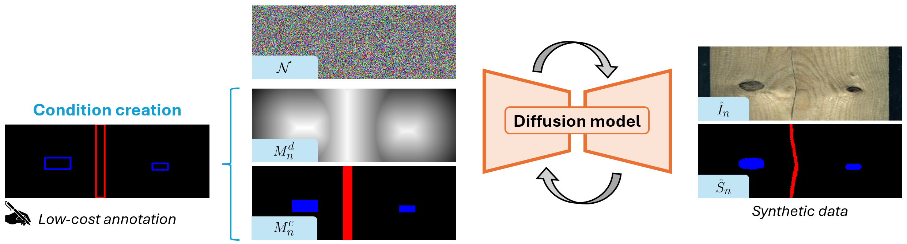
Bounding Box-Guided Diffusion for Synthesizing Industrial Images and Segmentation Map
CVPR Workshops 2025 - Poster
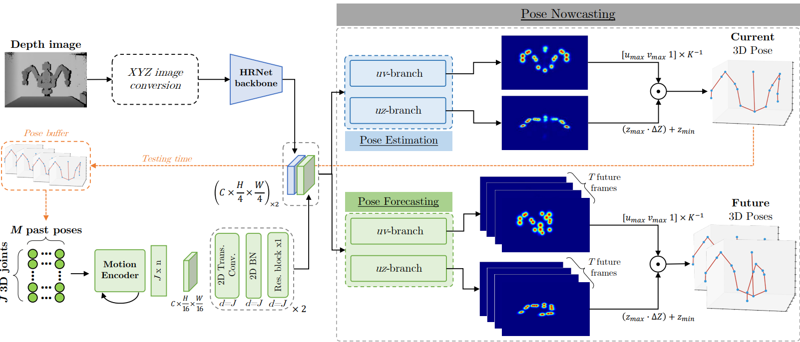
3D Pose Nowcasting: Forecast the future to improve the present
Computer Vision and Image Understanding, 2025
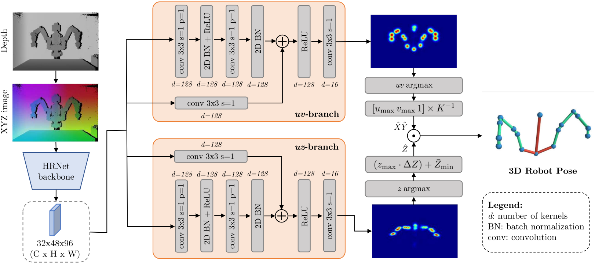
D-SPDH: Improving 3D Robot Pose Estimation in Sim2Real scenario via Depth Data
IEEE Access, 2024
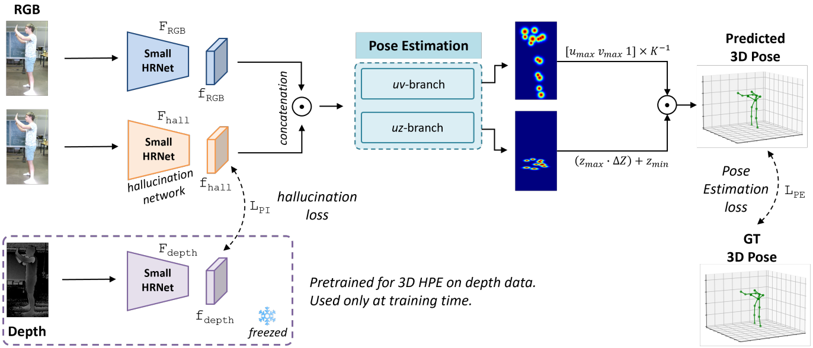
Depth-based Privileged Information for Boosting 3D Human Pose Estimation on RGB
ECCV Workshops 2024 - Poster
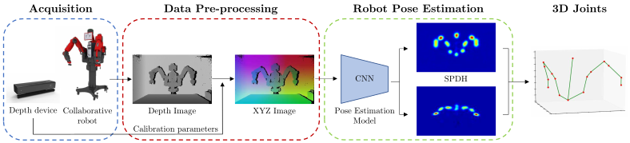
Semi-Perspective Decoupled Heatmaps for 3D Robot Pose Estimation from Depth Maps
IROS 2022 + IEEE Robotics and Automation Letters - Oral
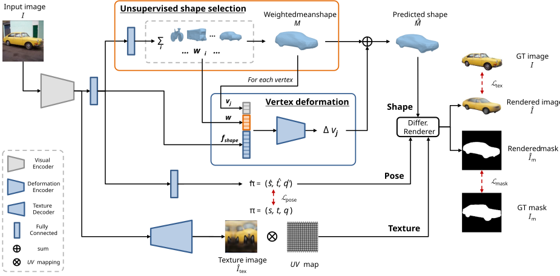
Multi-Category Mesh Reconstruction From Image Collections
3DV 2021 - Poster
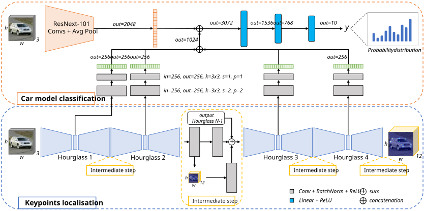
Improving Car Model Classification through Vehicle Keypoint Localization
VISAPP 2021 - Oral
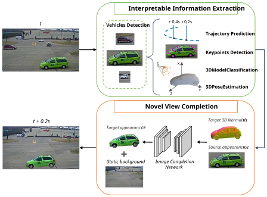
Future Urban Scenes Generation Through Vehicles Synthesis
ICPR 2020 - Poster
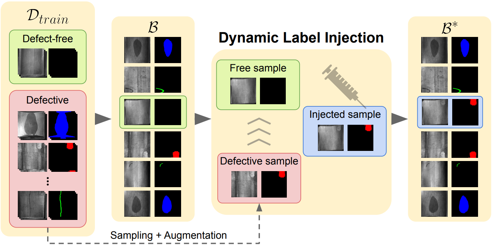
Dynamic Label Injection for Imbalanced Industrial Defect Segmentation
ECCV Workshops 2024 - Poster
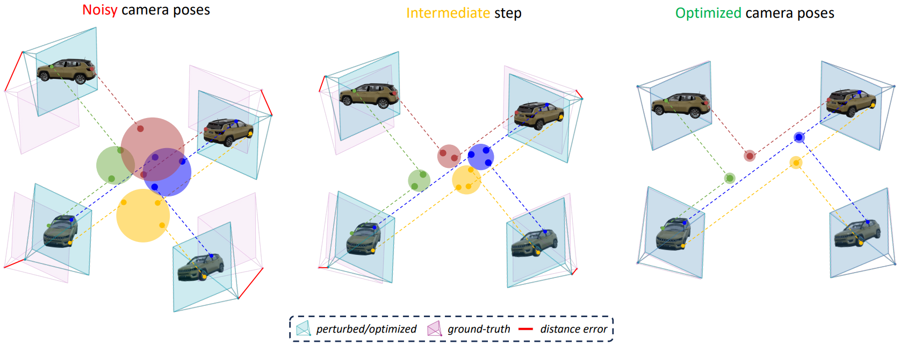
KRONC: Keypoint-based Robust Camera Optimization for 3D Car Reconstruction
ECCV Workshops 2024 - Oral
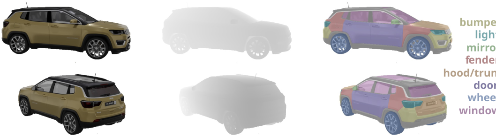
CarPatch: A Synthetic Benchmark for Radiance Field Evaluation on Vehicle Components
ICIAP 2023 - Oral
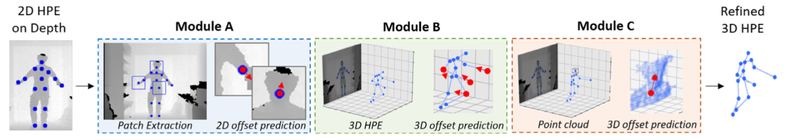
Depth-based 3D human pose refinement: Evaluating the refinet framework
Pattern Recognition Letters, 2023
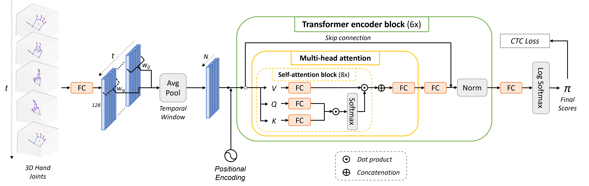
Unsupervised Detection of Dynamic Hand Gestures from Leap Motion Data
ICIAP 2021 - Poster
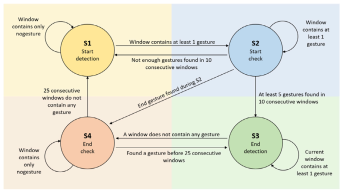
SHREC 2021: Skeleton-based hand gesture recognition in the wild
Computers and Graphics, 2021
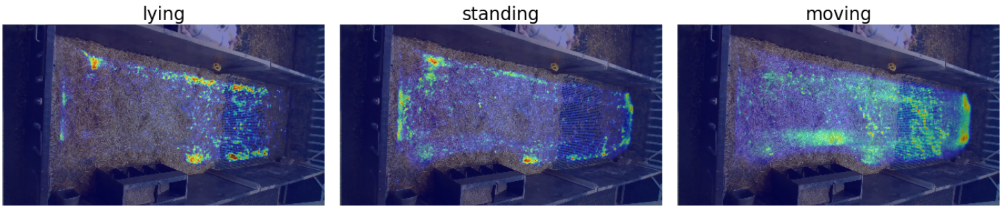
Extracting Accurate Long-term Behavior Changes from a Large Pig Dataset
VISAPP 2021 - Poster
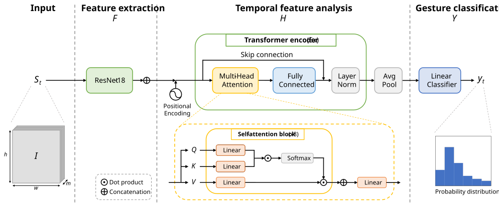
A Transformer-Based Network for Dynamic Hand Gesture Recognition
3DV 2020 - Poster
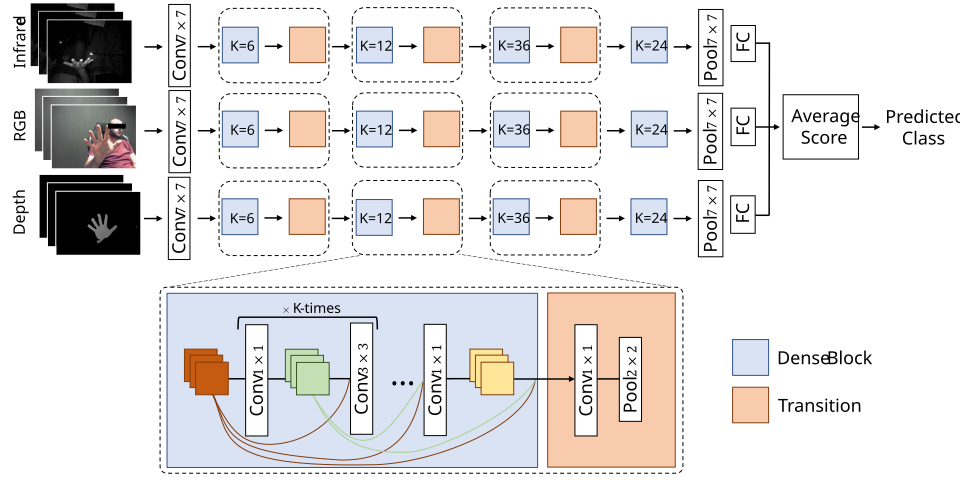
Multimodal Hand Gesture Classification for the Human-Car Interaction
Informatics, 2020
No publications match these filters.
Reviewing Activities
Conferences
ECCV, ICRA, WACV, ICPR
Journals and Workshops
Pattern Recognition, RA-L, T-CAP, WCPA